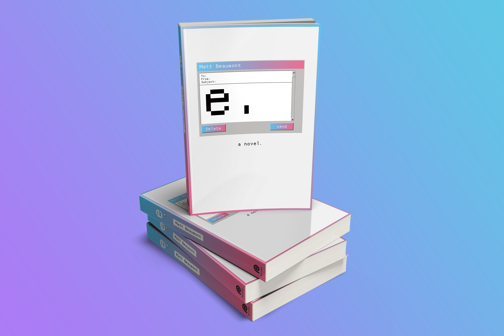

01/ E Redesign
This is a project I worked on for my sophomore studio Design class, in which I picked a random bargain book from the racks outside the Strand to redesign its cover. The book I selected is Matt Beaumont's 2000 novel E, a book written entirely in emails (classic 2000s). I designed two different covers for the book, the left a more contemporary take and the right a more retro take.